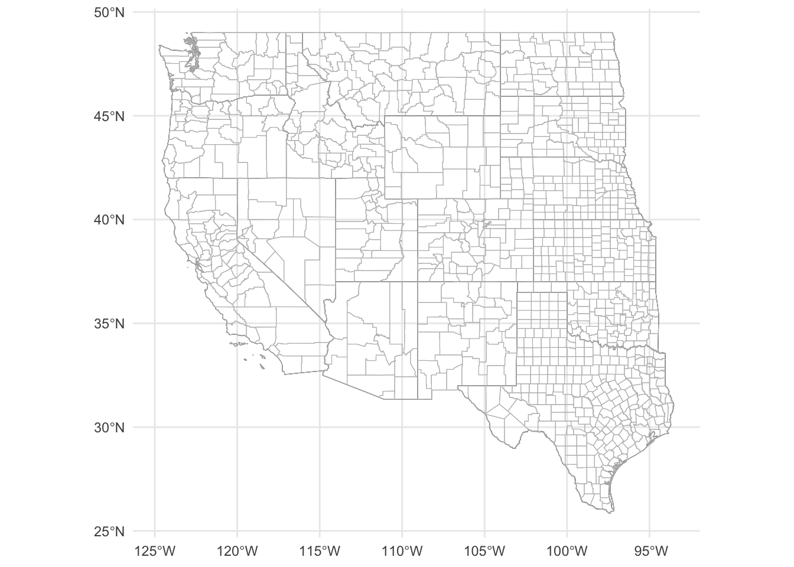
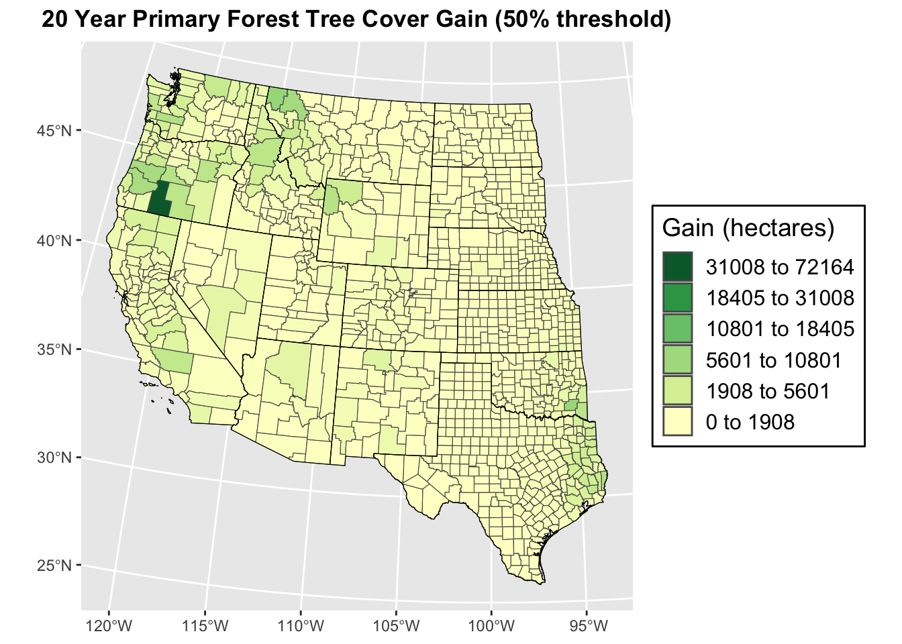
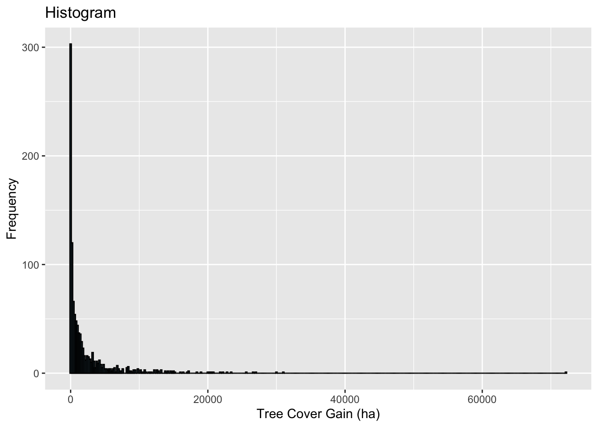
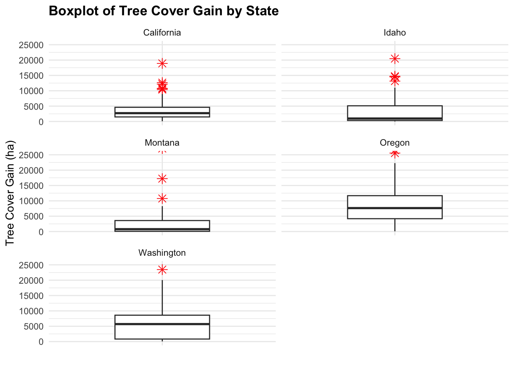
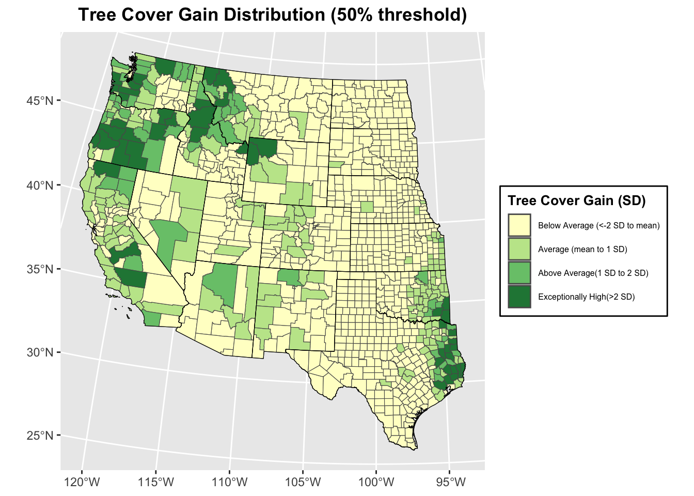

Tree Cover change in the Western U.S (50% threshold in 30m resolution)
Jesse Brodrick
2024-03-14
20 year Tree Cover Gain Mapping Anlaysis with Global Forest Watch Data
Reading in libraries and dataset
library(tidyverse)## ── Attaching core tidyverse packages ──────────────────────── tidyverse 2.0.0 ──
## ✔ dplyr 1.1.2 ✔ readr 2.1.4
## ✔ forcats 1.0.0 ✔ stringr 1.5.0
## ✔ ggplot2 3.4.4 ✔ tibble 3.2.1
## ✔ lubridate 1.9.2 ✔ tidyr 1.3.0
## ✔ purrr 1.0.1
## ── Conflicts ────────────────────────────────────────── tidyverse_conflicts() ──
## ✖ dplyr::filter() masks stats::filter()
## ✖ dplyr::lag() masks stats::lag()
## ℹ Use the conflicted package (<http://conflicted.r-lib.org/>) to force all conflicts to become errorslibrary(sf)## Linking to GEOS 3.10.2, GDAL 3.4.2, PROJ 8.2.1; sf_use_s2() is TRUElibrary(ggplot2)
library(RColorBrewer)
library(tigris)## To enable caching of data, set `options(tigris_use_cache = TRUE)`
## in your R script or .Rprofile.library(ggplot2)
library(classInt)
library(spdep)## Loading required package: spData
## To access larger datasets in this package, install the spDataLarge
## package with: `install.packages('spDataLarge',
## repos='https://nowosad.github.io/drat/', type='source')`getwd()## [1] "/Users/jessebrodrick/Desktop/490Pro/GEOG490"df <- read_csv("/Users/jessebrodrick/Desktop/490Pro/data/GlblFW/CTCL1.csv")## Rows: 25184 Columns: 30
## ── Column specification ────────────────────────────────────────────────────────
## Delimiter: ","
## chr (3): country, subnational1, subnational2
## dbl (27): threshold, area_ha, extent_2000_ha, extent_2010_ha, gain_2000_2020...
##
## ℹ Use `spec()` to retrieve the full column specification for this data.
## ℹ Specify the column types or set `show_col_types = FALSE` to quiet this message.Basemap and projection
# Options to return tigris objects as sf objects
options(tigris_class = "sf")
options(tigris_use_cache = TRUE)
# Obtain state boundaries
states_sf <- states(cb = TRUE)## Retrieving data for the year 2021# Obtain county boundaries
counties_sf <- counties(cb = TRUE)## Retrieving data for the year 2021# Filter for western states and their counties
western_states <- c("Washington", "Oregon", "California", "Idaho", "Nevada",
"Montana", "Utah", "Arizona", "Wyoming", "Colorado", "New Mexico",
"North Dakota", "South Dakota", "Nebraska", "Kansas", "Oklahoma", "Texas")
# Filter state and counties for western states sf
wus_states_sf <- states_sf[states_sf$NAME %in% western_states, ]
wus_counties_sf <- counties_sf[counties_sf$STATE_NAME %in% western_states, ]
# Check plot
ggplot() +
geom_sf(data = wus_states_sf, fill = NA, color = "black", size = 0.6) +
geom_sf(data = wus_counties_sf, fill = NA, color = "grey", size = 0.3) +
theme_minimal() 
# Projection
laea = st_crs("+proj=laea +lat_0=30 +lon_0=-100") # Lambert Azimuthal Equal Area
wus_states_sf_pro = st_transform(wus_states_sf, laea)
wus_counties_sf_pro = st_transform(wus_counties_sf, laea)
# Check plot
ggplot() +
geom_sf(data = wus_states_sf_pro, fill = NA, color = "black", size = 0.6) +
geom_sf(data = wus_counties_sf_pro, fill = NA, color = "grey", size = 0.3) +
theme_minimal() +
labs(title = "Western US States and Counties") ## Subset and merge Global Forest Watch data and projected US Census
boundaries
## Subset and merge Global Forest Watch data and projected US Census
boundaries
Global Forest watch provides thresholds or amount of tree canopy coverage (density of 30m resolution) for 0, 10, 20, 30, 50, and 75 percent for 20 years of forest cover gain/loss in hecatares.
# Subset data based on the western states with a canopy density threshold of 50
df_subset <- df[df$subnational1 %in% western_states, ] %>%
filter(threshold == 50)
head(df_subset)## # A tibble: 6 × 30
## country subnational1 subnational2 threshold area_ha extent_2000_ha
## <chr> <chr> <chr> <dbl> <dbl> <dbl>
## 1 United States Arizona Apache 50 2899204 325646
## 2 United States Arizona Cochise 50 1605975 30265
## 3 United States Arizona Coconino 50 4831891 402488
## 4 United States Arizona Gila 50 1237368 97734
## 5 United States Arizona Graham 50 1208898 58785
## 6 United States Arizona Greenlee 50 476907 101753
## # ℹ 24 more variables: extent_2010_ha <dbl>, gain_2000_2020_ha <dbl>,
## # tc_loss_ha_2001 <dbl>, tc_loss_ha_2002 <dbl>, tc_loss_ha_2003 <dbl>,
## # tc_loss_ha_2004 <dbl>, tc_loss_ha_2005 <dbl>, tc_loss_ha_2006 <dbl>,
## # tc_loss_ha_2007 <dbl>, tc_loss_ha_2008 <dbl>, tc_loss_ha_2009 <dbl>,
## # tc_loss_ha_2010 <dbl>, tc_loss_ha_2011 <dbl>, tc_loss_ha_2012 <dbl>,
## # tc_loss_ha_2013 <dbl>, tc_loss_ha_2014 <dbl>, tc_loss_ha_2015 <dbl>,
## # tc_loss_ha_2016 <dbl>, tc_loss_ha_2017 <dbl>, tc_loss_ha_2018 <dbl>, …# Merging projected SF to GFW data frame
wus_gbl_merge <- wus_counties_sf_pro %>%
left_join(df_subset, by = c("STATE_NAME" = "subnational1", "NAME" = "subnational2"))
# Replacing NA's with zero
wus_gbl_merge <- wus_gbl_merge %>%
mutate(gain_2000_2020_ha = replace_na(gain_2000_2020_ha, 0))
head(wus_gbl_merge)## Simple feature collection with 6 features and 40 fields
## Geometry type: MULTIPOLYGON
## Dimension: XY
## Bounding box: xmin: -962581.9 ymin: 510248.9 xmax: 508708.3 ymax: 1759691
## Projected CRS: +proj=laea +lat_0=30 +lon_0=-100
## STATEFP COUNTYFP COUNTYNS AFFGEOID GEOID NAME NAMELSAD
## 1 20 161 00485044 0500000US20161 20161 Riley Riley County
## 2 30 009 01720111 0500000US30009 30009 Carbon Carbon County
## 3 16 007 00395090 0500000US16007 16007 Bear Lake Bear Lake County
## 4 31 185 00835914 0500000US31185 31185 York York County
## 5 08 037 00198134 0500000US08037 08037 Eagle Eagle County
## 6 40 079 01101827 0500000US40079 40079 Le Flore Le Flore County
## STUSPS STATE_NAME LSAD ALAND AWATER country threshold area_ha
## 1 KS Kansas 06 1579077672 32047392 United States 50 162762
## 2 MT Montana 06 5303728455 35213028 United States 50 533358
## 3 ID Idaho 06 2527123155 191364281 United States 50 271541
## 4 NE Nebraska 06 1482794063 8595055 United States 50 149708
## 5 CO Colorado 06 4362754228 18970639 United States 50 437219
## 6 OK Oklahoma 06 4116554962 49752941 United States 50 417282
## extent_2000_ha extent_2010_ha gain_2000_2020_ha tc_loss_ha_2001
## 1 15209 8768 639 12
## 2 53663 36426 385 235
## 3 44456 31959 486 22
## 4 1873 1197 440 1
## 5 156226 131596 3154 330
## 6 244116 214209 12843 1518
## tc_loss_ha_2002 tc_loss_ha_2003 tc_loss_ha_2004 tc_loss_ha_2005
## 1 3 7 14 10
## 2 695 92 237 326
## 3 8 1 93 34
## 4 0 0 2 1
## 5 19 247 247 305
## 6 1964 845 1126 1304
## tc_loss_ha_2006 tc_loss_ha_2007 tc_loss_ha_2008 tc_loss_ha_2009
## 1 10 13 28 9
## 2 61 887 880 310
## 3 9 11 4 9
## 4 2 0 0 0
## 5 218 872 256 105
## 6 2287 2092 2211 2016
## tc_loss_ha_2010 tc_loss_ha_2011 tc_loss_ha_2012 tc_loss_ha_2013
## 1 7 8 16 19
## 2 20 644 203 41
## 3 40 164 138 58
## 4 1 0 1 1
## 5 745 259 202 81
## 6 1897 1832 1693 965
## tc_loss_ha_2014 tc_loss_ha_2015 tc_loss_ha_2016 tc_loss_ha_2017
## 1 36 3 22 17
## 2 188 135 5 1
## 3 50 2 13 68
## 4 0 1 2 1
## 5 97 84 47 247
## 6 1208 1010 1793 1468
## tc_loss_ha_2018 tc_loss_ha_2019 tc_loss_ha_2020 tc_loss_ha_2021
## 1 6 7 45 12
## 2 89 70 0 2758
## 3 1 137 2 1
## 4 1 1 1 1
## 5 1527 854 81 1102
## 6 903 1320 881 961
## tc_loss_ha_2022 geometry
## 1 13 MULTIPOLYGON (((263040.7 10...
## 2 255 MULTIPOLYGON (((-775324.9 1...
## 3 3 MULTIPOLYGON (((-957856.1 1...
## 4 1 MULTIPOLYGON (((183621.9 12...
## 5 311 MULTIPOLYGON (((-612748.3 1...
## 6 988 MULTIPOLYGON (((452481.3 53...summary(wus_gbl_merge$gain_2000_2020_ha)## Min. 1st Qu. Median Mean 3rd Qu. Max.
## 0.00 66.25 655.50 2251.94 2428.25 72164.00###Plotting Tree Cover Gain at 50% Canopy Cover Threshold over 20 years
# Classifying data for visualization using natural jenks method
ctpnts <- classIntervals(wus_gbl_merge$gain_2000_2020_ha, n = 6, style = "jenks")
cols <- brewer.pal(6, "YlGn")
colors <- colorRampPalette(cols)(length(ctpnts$brks)-1)
# Plotting
ggplot(wus_gbl_merge) +
geom_sf(aes(fill = gain_2000_2020_ha)) +
scale_fill_gradientn(colors = colors,
breaks = ctpnts$brks[-length(ctpnts$brks)],
labels = rev(paste(round(ctpnts$brks[-length(ctpnts$brks)], 1), "to",
round(ctpnts$brks[-1], 1))),
limits = range(wus_gbl_merge$gain_2000_2020_ha)) +
labs(title = "20 Year Primary Forest Tree Cover Gain (50% threshold)", fill = "Gain (hectares)") +
theme(plot.title = element_text(hjust = 0.5, face = "bold"),
legend.position = "right",
legend.background = element_rect(fill = "white", colour = "black"),
legend.key = element_blank(),
legend.text = element_text(size = 12),
legend.title = element_text(size = 14)) +
guides(fill = guide_legend(override.aes = list(fill = rev(colors)))) +
geom_sf(data = wus_states_sf_pro, fill = NA, color = "black", size = 1.5)  ### Assess spatial distribution of Canopy Cover Gain Descriptive statistics
# Summary statistics
summary(wus_gbl_merge$gain_2000_2020_ha)## Min. 1st Qu. Median Mean 3rd Qu. Max.
## 0.00 66.25 655.50 2251.94 2428.25 72164.00# Histogram
ggplot(wus_gbl_merge, aes(x = gain_2000_2020_ha)) +
geom_histogram(binwidth = 200, fill = "skyblue", color = "black") +
labs(title = "Histogram", x = "Tree Cover Gain (ha)", y = "Frequency")
# Boxplot highlighting PNW outliers by state
PNW <- c("Washington", "Oregon", "California", "Idaho", "Montana")
PNW_SF <- wus_gbl_merge[wus_gbl_merge$STATE_NAME %in% PNW, ]
head(PNW_SF)## Simple feature collection with 6 features and 40 fields
## Geometry type: MULTIPOLYGON
## Dimension: XY
## Bounding box: xmin: -1833052 ymin: 504019.9 xmax: -640734.2 ymax: 2117980
## Projected CRS: +proj=laea +lat_0=30 +lon_0=-100
## STATEFP COUNTYFP COUNTYNS AFFGEOID GEOID NAME NAMELSAD
## 2 30 009 01720111 0500000US30009 30009 Carbon Carbon County
## 3 16 007 00395090 0500000US16007 16007 Bear Lake Bear Lake County
## 11 41 035 01155134 0500000US41035 41035 Klamath Klamath County
## 18 53 043 01514052 0500000US53043 53043 Lincoln Lincoln County
## 19 06 059 00277294 0500000US06059 06059 Orange Orange County
## 20 06 111 00277320 0500000US06111 06111 Ventura Ventura County
## STUSPS STATE_NAME LSAD ALAND AWATER country threshold area_ha
## 2 MT Montana 06 5303728455 35213028 United States 50 533358
## 3 ID Idaho 06 2527123155 191364281 United States 50 271541
## 11 OR Oregon 06 15410373389 484953082 United States 50 1590318
## 18 WA Washington 06 5984421204 75265950 United States 50 605748
## 19 CA California 06 2053476505 406279630 United States 50 206072
## 20 CA California 06 4767622161 947345735 United States 50 480834
## extent_2000_ha extent_2010_ha gain_2000_2020_ha tc_loss_ha_2001
## 2 53663 36426 385 235
## 3 44456 31959 486 22
## 11 487365 427271 72164 4601
## 18 8713 12163 961 68
## 19 10626 14559 3478 75
## 20 67109 76605 2626 144
## tc_loss_ha_2002 tc_loss_ha_2003 tc_loss_ha_2004 tc_loss_ha_2005
## 2 695 92 237 326
## 3 8 1 93 34
## 11 4274 6348 5393 3755
## 18 98 5 378 38
## 19 108 66 84 69
## 20 1941 1957 1267 849
## tc_loss_ha_2006 tc_loss_ha_2007 tc_loss_ha_2008 tc_loss_ha_2009
## 2 61 887 880 310
## 3 9 11 4 9
## 11 2991 3675 3548 4954
## 18 180 92 30 75
## 19 481 784 305 101
## 20 10156 3174 1348 105
## tc_loss_ha_2010 tc_loss_ha_2011 tc_loss_ha_2012 tc_loss_ha_2013
## 2 20 644 203 41
## 3 40 164 138 58
## 11 1767 2594 2315 2456
## 18 19 8 25 21
## 19 25 11 60 0
## 20 118 61 100 487
## tc_loss_ha_2014 tc_loss_ha_2015 tc_loss_ha_2016 tc_loss_ha_2017
## 2 188 135 5 1
## 3 50 2 13 68
## 11 3880 4547 5318 8485
## 18 33 46 93 108
## 19 4 1 19 24
## 20 81 47 207 14992
## tc_loss_ha_2018 tc_loss_ha_2019 tc_loss_ha_2020 tc_loss_ha_2021
## 2 89 70 0 2758
## 3 1 137 2 1
## 11 7872 5236 4434 27950
## 18 74 72 37 36
## 19 854 357 17 14
## 20 2947 263 36 19
## tc_loss_ha_2022 geometry
## 2 255 MULTIPOLYGON (((-775324.9 1...
## 3 3 MULTIPOLYGON (((-957856.1 1...
## 11 4287 MULTIPOLYGON (((-1829815 15...
## 18 54 MULTIPOLYGON (((-1436119 20...
## 19 71 MULTIPOLYGON (((-1666632 55...
## 20 29 MULTIPOLYGON (((-1781105 60...quantile(wus_gbl_merge$gain_2000_2020_ha)## 0% 25% 50% 75% 100%
## 0.00 66.25 655.50 2428.25 72164.00ggplot(PNW_SF, aes(x = STATE_NAME, y = gain_2000_2020_ha)) +
geom_boxplot(width = 0.5, outlier.shape = 8, outlier.color = "red", outlier.size = 3) +
labs(title = "Boxplot of Tree Cover Gain by State", y = "Tree Cover Gain (ha)", x = "") +
facet_wrap( ~ STATE_NAME, scales = "free_x", ncol = 2) +
theme_minimal() +
theme(plot.title = element_text(face = "bold"),
legend.position = "none",
axis.text.x = element_blank(),
axis.ticks.x = element_blank()) +
coord_cartesian(ylim = c(-0, 25000)) 
# Creating standard distribution table to visualize amount of object values within sd break points
mean_gain <- mean(wus_gbl_merge$gain_2000_2020_ha, na.rm = TRUE)
sd_gain <- sd(wus_gbl_merge$gain_2000_2020_ha, na.rm = TRUE)
labels <- c("<-2 SD", "-2 SD to -1 SD", "-1 SD to mean", "mean to 1 SD", " 1 SD to 2 SD", ">2 SD")
breakpoints <- c(-Inf, mean_gain - 2*sd_gain, mean_gain - sd_gain, mean_gain, mean_gain + sd_gain, mean_gain + 2*sd_gain, Inf)
wus_gbl_merge$categories <- cut(wus_gbl_merge$gain_2000_2020_ha, breaks = breakpoints, labels = labels)
table(wus_gbl_merge$categories)##
## <-2 SD -2 SD to -1 SD -1 SD to mean mean to 1 SD 1 SD to 2 SD
## 0 0 785 179 51
## >2 SD
## 47Plotting distribution of canopy cover change map
#
breakpoints <- c(-Inf, mean_gain, mean_gain + sd_gain, mean_gain + 2*sd_gain, Inf)
labels <- c("Below Average (<-2 SD to mean)", "Average (mean to 1 SD)", "Above Average(1 SD to 2 SD)", "Exceptionally High(>2 SD)")
colors <- brewer.pal(4, "YlGn")
# Create a factor with labels based on cut points
wus_gbl_merge$gain_category <- cut(wus_gbl_merge$gain_2000_2020_ha,
breaks = breakpoints,
labels = labels)
# Plot
ggplot(wus_gbl_merge) +
geom_sf(aes(fill = gain_category)) +
scale_fill_manual(values = colors) +
labs(title = "Tree Cover Gain Distribution (50% threshold)",
fill = "Tree Cover Gain (SD)") +
theme(plot.title = element_text(hjust = 0.5, face = "bold"),
legend.position = "right",
legend.background = element_rect(fill = "white", colour = "black"),
legend.text = element_text(size = 6),
legend.title = element_text(size = 10, face = "bold")) +
geom_sf(data = wus_states_sf_pro, fill = NA, color = "black", size = 1.5) 